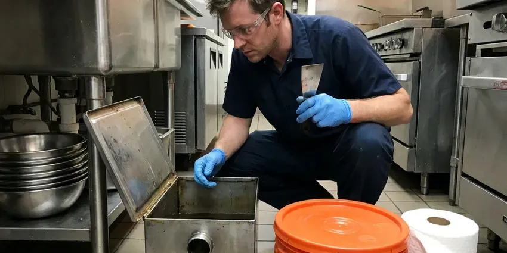

Garbage Disposal Replacement in Charlotte, NC
Water leaking from the bottom of the disposal in Charlotte, NC? That seal cannot be fixed, and HFN Plumbing can put in a new unit in about an hour.
- Flat Price Up Front
- Fresh Mounting Hardware
- Same Day Replacement
- Quiet and Stronger Models

Time for a New Garbage Disposal in Charlotte, NC?
Turn the disposal off at the switch and we will bring a replacement on the truck.
Quick Garbage Disposal Replacement in Charlotte, NC
HFN Plumbing replaces disposals with a new mount, new gaskets and fresh putty on the flange, even when the old hardware looks fine. Old gaskets go hard. A ten-year-old gasket paired with a new unit is the top cause of a replacement that starts dripping a few months later in Charlotte, NC kitchens.
Some of what we do:
- Upgrading broken or outdated disposals
- Fresh flange and mount with each unit
- Safe removal of old units

Additional Kitchen Plumbing Services in Charlotte, NC
Our kitchen plumbing services in Charlotte, NC cover sinks, disposals, dishwashers, and grease traps so your kitchen keeps running without backups or leaks.




Professional grease trap cleaning, Charlotte

Customers
Why Choose HFN Plumbing for Garbage Disposal Replacement in Charlotte, NC?
A replacement should last ten years or more. That depends on the unit, the install and how it gets used, so we pick a model that fits your cooking, install it to the maker's specs and show you what to keep out of it in your Charlotte home.
- Upgrade Options, We offer quieter, stronger models for every budget.
- Correct Sizing, We help you pick from 1/3 HP to 1 HP based on your household.
- Code Compliance, Every replacement follows local Charlotte, NC plumbing code on dishwasher drains and traps.
Citywide Coverage
Our plumbers serve all of town. Popular 1/2 and 3/4 HP units are on the truck, so the swap happens on the first trip, the old unit leaves and the cabinet gets wiped dry. No return trip.
Experienced Team
Our licensed plumbers have replaced every kind of disposal, including continuous-feed and batch-feed models. Little surprises them. They deal with rusted mounts, cracked flanges and taped cord splices as a matter of routine, and they fix them rather than hanging a new unit on bad parts in Charlotte homes.
Safety-First Approach
Safety comes first on each replacement we take on in Charlotte, NC. No one reaches into the hopper. The old disposal gets handled by its housing, and pliers go in for anything left inside, because the grinding ring stays sharp even when the motor is dead.
Trusted Certified Charlotte Plumbing Services Professionals
At HFN Plumbing, we are proud to offer certified plumbing services throughout Charlotte, NC. Those papers on the wall mean something. Our plumbers hold recognized industry credentials, and they follow strict safety and quality rules on every repair, installation and maintenance call we run.
Call Us Now PHCC Plumbing Contractor Recognition
PHCC Plumbing Contractor Recognition Better Business Bureau (BBB) Accreditation
Better Business Bureau (BBB) Accreditation Angi Certified Pro
Angi Certified Pro ISO 9001 Quality Management Certification
ISO 9001 Quality Management CertificationSwapping Out Old Disposals Properly in Charlotte, NC
Leaking Disposal Replacement in Charlotte
Water from the bottom of the housing means the internal seal has failed, and that seal is not a replaceable part. We pull the unit, dry the cabinet, check the floor for soft spots and install a new disposal with a new flange and gaskets so every seal on the assembly is fresh. Soft cabinet floors need attention. You will hear about it from us.

InSinkErator Model Upgrades in Charlotte
Stepping up from a Badger to an Evolution is the upgrade we install most, since the Evolution line adds grind stages and sound insulation. Both use the Quick Lock mount, so a sound flange and ring can often stay, cutting down the install time. Evolution units are taller. We measure first.
Disposal Housing Leak Replacement in Charlotte
A body leak usually means the seal inside the unit is gone. This cannot be repaired. We remove the leaking unit, inspect the cabinet for water damage, install a new disposal on new mounting hardware, and then test it with water and check every connection for drips.
Higher Horsepower Replacement in Charlotte, NC
Moving up from 1/3 HP to 3/4 HP cuts down on jams in most kitchens, especially for big families or people who cook from scratch every night. Before ordering, we confirm the circuit, cabinet room and trap height, since a larger unit pulls more current and hangs lower. Most kitchens handle it fine.
Replacing Leaking Disposals in Charlotte, NC
A slow leak under the sink can rot the cabinet base and leave a musty smell long after the drip is fixed. If your disposal leaks from the housing or a cracked body, replacement is the only real fix, and we inspect the cabinet floor for water damage before installing the new unit. Every seal is new. That includes the flange, discharge and dishwasher inlet.
Mount and Flange Replacement in Charlotte
We check the flange and mount on every replacement. If they are corroded, scratched at the seal or leaking, we replace them with new parts, which prevents leaks at the top of the disposal and lets the new unit seal tight to the sink. Old putty gets scraped off.
Choosing a Replacement on a Budget in Charlotte, NC
A basic 1/3 HP unit costs the least, but in a busy kitchen it often jams and wears out sooner. A 1/2 HP model usually hits the best balance for a typical family, with enough power for everyday scraps and a price well below the premium lines. You get the choices in plain terms. Both prices go on the quote when it is close.

Old Unit Removal and New Installation in Charlotte, NC
Removal includes disconnecting the power, the drain and the dishwasher hose. Next the new unit goes on a fresh mount, everything gets reconnected and tested with water, and the cabinet is cleaned before we go. The old unit goes with us.
Disposal Replacement Near Me in Charlotte, NC
Our plumbers know how homes here are plumbed. We know which older kitchens have galvanized drain arms in Charlotte, and those arms are worth replacing during the swap because they rust shut from the inside and slow the new disposal down. Ask when you call (980) 364-4317.
Search for disposal replacement nearby and you will find big companies that book days out. Our plumbers live here. In Charlotte, NC, our dispatch sends the plumber closest to your home, which keeps the wait short and gets your sink draining again sooner.
HFN Plumbing at a Glance
- Licensed and insured plumbers serving Charlotte, NC
- Same-day appointments and 24/7 emergency response
- Upfront, flat-rate pricing before work begins
- 4.8-star rated by 840+ North Carolina customers
Charlotte Map
Charlotte Information
- Population
- 911,311
- Area codes
- 704/980/757
- Service area
- Charlotte and towns within a 40 mile drive
- Nearby
- Huntersville, Concord, Gastonia, Kannapolis
Scale, grease and years of daily grinding wear disposals out, so swapping a tired unit before it leaks into the cabinet saves Charlotte, NC homeowners a bigger repair.
Expert Services
Call HFN Plumbing for reliable plumbing work done by licensed pros in Charlotte, NC.
Our Specialized Plumbing Services in Charlotte, NC
At HFN Plumbing, we handle the full list of plumbing services across Charlotte, NC. From leak detection to full system installs, our team works fast and charges fair prices on homes and commercial properties alike. Here are the core services we offer:


How a Disposal Replacement Works in Charlotte, NC
From your first call to the final water test, here is what happens.
Call for a Price
Call (980) 364-4317 and tell us about the old disposal. You get one price for unit and labor.
Check the Old Unit
Your plumber confirms it needs replacing at your Charlotte home and helps you pick the new unit.
Remove and Install
We remove the failed unit, install the new one on a fresh mount and test it with water.
Frequently Asked Questions About Garbage Disposal Replacement in Charlotte
Most replacements run $200 to $600 with the unit. Basic 1/3 HP units start near $100 and premium 1 HP models can pass $300, with labor and any drain or wiring work making up the difference. You get the price first.
Haul-away is included with every replacement.
InSinkErator, Waste King, Moen, GE, KitchenAid and Whirlaway, plus most others. Each brand mounts its own way. When you switch brands we replace the sink flange and mount along with the unit, which adds a little time but leaves every seal on the assembly new.
InSinkErator, Moen, Waste King and KitchenAid are the usual picks. Badger is InSinkErator's basic line, and we install those as well as the quieter Evolution models when a homeowner wants less noise.
A same-mount swap is doable for many homeowners. If wiring or drains need changes, a plumber is the safer choice.
Start with how much you cook. For light use 1/3 or 1/2 HP works, and for regular cooking or tougher scraps, 3/4 or 1 HP is better, and we can help you weigh it for your Charlotte home.
A unit that jams often usually does better replaced by a 3/4 or 1 HP model.
Yes. Manufacturer warranties usually run one to ten years, depending on the model. On top of that, HFN Plumbing warranties the labor on the installation, and the terms go on your invoice so you know exactly what is covered.
Hear From Customers Who Hired Our Plumbing Experts

Tyler J.
We bought a taller comfort height toilet for my dad, who just had knee surgery. The plumber pulled the old one, found the flange was cracked, and replaced it before setting the new bowl. Took about two hours.
Toilet Installation · Kannapolis, NC
Monica A.
Our water bill nearly doubled in one month with no change in how we used water. The tech checked the meter, heard the leak under the hallway with his equipment, and opened a hole about a foot square. Fixed the same day.
Slab Leak Repair · Huntersville, NCNathan E.
Our tankless heater kept throwing an error code and shutting off mid shower. The tech flushed the heat exchanger, which was full of scale, and replaced a bad flow sensor. Hot water has been steady for half a year now.
Water Heater Repair · Huntersville, NC
Karen W.
After our third pinhole leak in copper, we stopped patching. HFN Plumbing gave us a written plan room by room and repiped the house in PEX while we stayed in it. The crew covered our floors every morning and cleaned up every night.
Repiping · Concord, NC
Emily R.
The shutoff valve under our kitchen sink snapped off in my hand on a Sunday morning. HFN Plumbing had someone out by early afternoon. He replaced both angle stops with quarter turn valves and showed me where our main shutoff was, which I honestly did not know.
Plumbing Repair · Kannapolis, NC
Kevin O.
Before buying our house I paid for a sewer camera inspection. HFN Plumbing found a belly in the line that held standing water about forty feet from the cleanout. We used the video to get the sellers to fix it before closing.
Sewer Camera Inspection · Concord, NC